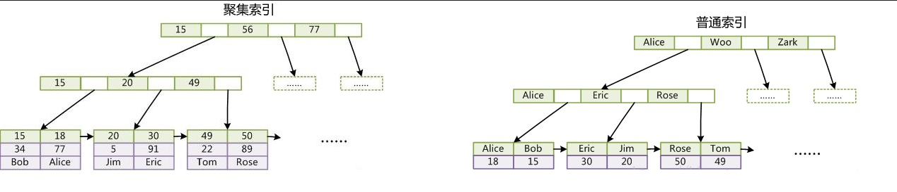

使用聚集索引的影响
- 普通索引体积变大
CREATE INDEX IDX_EMP_LAST_NAME ON EMPLOYEES(LAST_NAME);
SELECT INDEX_USED_SPACE(SCHNAME=> USER , INDEXNAME=> 'IDX_EMP_LAST_NAME'); -- 960
CREATE CLUSTER INDEX IDX_EMP_FIST_NAME_LAST_NAME_HIRE_DATE ON EMPLOYEES(FIRST_NAME,LAST_NAME,HIRE_DATE DESC);
SELECT INDEX_USED_SPACE(SCHNAME=> USER , INDEXNAME=> 'IDX_EMP_LAST_NAME'); -- 1648- 修改操作开销变大